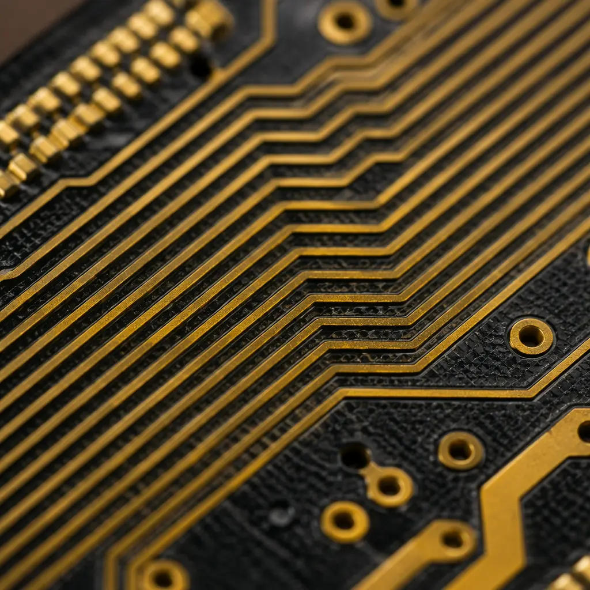
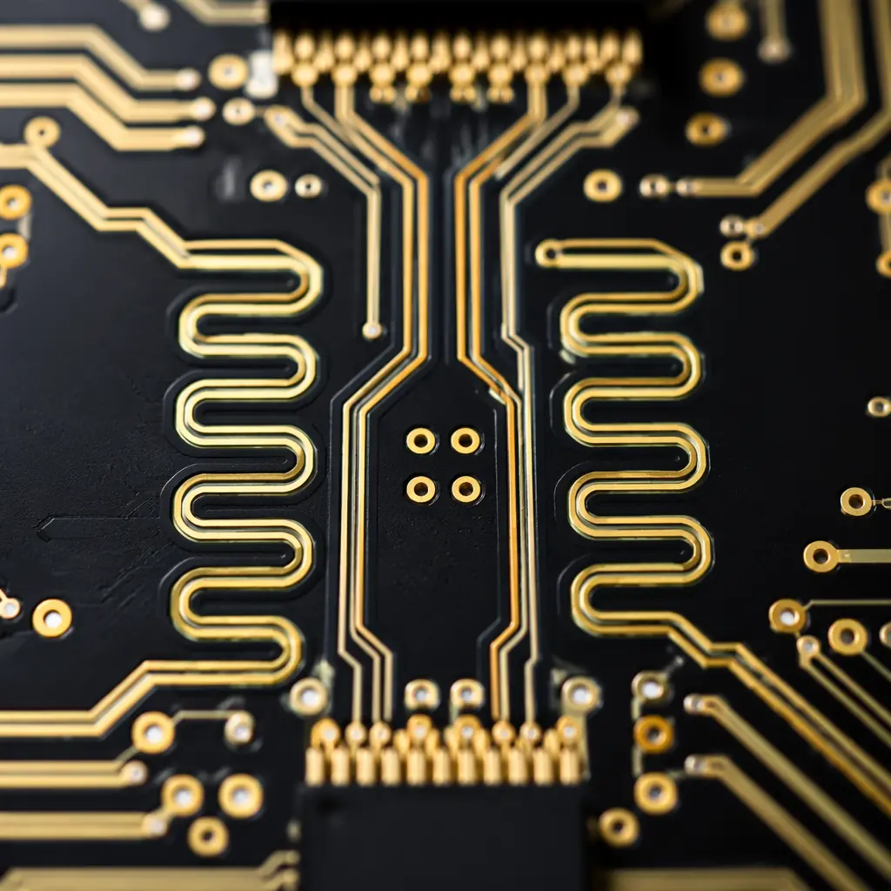
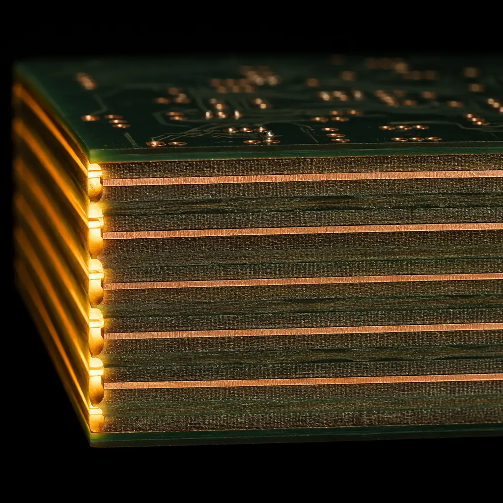

Signal integrity is the difference between a board that works on the first spin and one that consumes 3-6 months of debug cycles. When rise times drop below 1 nanosecond — which happens at clock speeds above roughly 100 MHz — your traces stop behaving like simple wires and start behaving like transmission lines. Reflections, crosstalk, and ground bounce become deterministic failures, not statistical anomalies.
At Huaxing PCBA, we manufacture over 80,000 square meters of controlled-impedance PCBs every month across 8 SMT lines. Our TDR (Time Domain Reflectometry) equipment validates impedance on every controlled-impedance order, and our engineering team reviews signal integrity concerns on roughly 40% of all fabrication notes — from high-speed digital to RF to mixed-signal designs. This guide covers the signal integrity rules that matter at the PCB fabrication level, where design intent meets physical reality.

When Signal Integrity Actually Matters: The Rise-Time Rule
The industry shorthand is simple: signal integrity stops being optional when your signal's rise time is shorter than 6× the propagation delay of your longest trace. For FR-4 with a dielectric constant of ~4.0, propagation delay is approximately 150 ps/inch (59 ps/cm). That means:
| Trace Length | Propagation Delay | Critical Rise Time | Corresponding Clock Speed |
|---|---|---|---|
| 50 mm (2") | 295 ps | < 1.8 ns | ~110 MHz |
| 100 mm (4") | 590 ps | < 3.5 ns | ~57 MHz |
| 200 mm (8") | 1.18 ns | < 7 ns | ~28 MHz |
| 500 mm (20") | 2.95 ns | < 17.7 ns | ~11 MHz |
Notice the counterintuitive reality: a 200 mm SPI bus running at just 25 MHz can have worse signal integrity problems than a 50 mm DDR4 interface at 1.6 GHz. It's the combination of trace length and edge rate that determines whether you need to treat your traces as transmission lines. A modern FPGA with 200 ps rise times makes even a 30 mm trace a transmission line — at any clock frequency.
Procurement Signal: If your PCB specification includes terms like "controlled impedance," "differential pairs," or "length matching," your manufacturer must have TDR equipment and a documented impedance control process. At Huaxing PCBA, every controlled-impedance order includes a TDR test report with measured impedance values for each specified trace structure — not just a coupon measurement, but actual impedance traces from production panels.
The Four Enemies of Signal Integrity
Every signal integrity problem traces back to one of four root causes. Understanding which one dominates your design determines your mitigation strategy:
Reflections — Impedance Mismatches at Every Junction
When a signal encounters a change in impedance — at a connector, a via stub, a bend in the trace, or an unterminated receiver — a portion of the signal energy reflects back toward the source. For a 50Ω source driving a 50Ω trace that terminates into a high-impedance CMOS input, the reflection coefficient approaches 1.0 — meaning the entire signal reflects back, superimposing on subsequent bits and closing the eye diagram. Reflections are the most common SI failure mode in single-ended digital interfaces below 500 MHz.
Crosstalk — When Your Neighbor's Signal Becomes Your Noise
Capacitive and inductive coupling between adjacent traces injects noise from aggressive (switching) signals into victim (quiet) signals. Near-end crosstalk (NEXT) propagates backward toward the driver and saturates at a fixed amplitude; far-end crosstalk (FEXT) propagates forward and grows with trace length. The standard rule — 3× the trace width for center-to-center spacing — is a starting point, not a guarantee. At edge rates below 500 ps, even 5W spacing may be insufficient for parallel runs longer than 25 mm. See our impedance control guide for how spacing affects both crosstalk and characteristic impedance simultaneously.
Ground Bounce and Simultaneous Switching Noise (SSN)
When multiple outputs switch simultaneously — common in wide parallel buses and FPGA I/O banks — the cumulative current surge through the shared ground inductance creates a voltage spike: V = L × di/dt. With 32 outputs switching 5 mA each in 500 ps through just 1 nH of package inductance, the ground bounce reaches 320 mV — enough to corrupt the threshold detection on a 1.8V logic interface. The fix involves power delivery network (PDN) design, which we cover in our stackup design guide.
Inter-Symbol Interference (ISI) — When One Bit Corrupts the Next
In lossy channels — long traces on standard FR-4 above 1 GHz — frequency-dependent dielectric loss and skin effect attenuate high-frequency components more than low-frequency ones. The result: a transmitted '1' doesn't fully charge the line, so the following '0' starts from the wrong voltage level. ISI closes the eye diagram vertically and is the dominant failure mode in high-speed serial links (PCIe, SATA, USB 3.x) running across backplanes longer than 300 mm.
Impedance Control: The Non-Negotiable Foundation
Every signal integrity strategy starts with controlled impedance. A trace that's supposed to be 50Ω ±10% but measures 62Ω will have a reflection coefficient of 0.11 at every impedance discontinuity — meaning 11% of your signal energy reflects at each junction. For a signal passing through a connector, two vias, and a package pin (four discontinuities), that compounds to roughly 37% total reflection loss before the signal even reaches the receiver.
The three parameters that determine your trace impedance are well understood, but how they interact at the fabrication level is where designs succeed or fail:
| Parameter | Impact on Impedance | Fabrication Tolerance | Your Specification |
|---|---|---|---|
| Trace Width | Wider = lower Z₀ | ±10% (standard), ±5% (controlled) | Specify finished width, not drawn width |
| Dielectric Thickness (h) | Thinner = lower Z₀ | ±10% on prepreg thickness | Request actual laminate thickness data |
| Dielectric Constant (Dk) | Higher Dk = lower Z₀ | ±0.05 to ±0.15 (material dependent) | Specify material by manufacturer part number |
At Huaxing PCBA, our material selection for controlled-impedance designs always includes a pre-production impedance calculation using the actual laminate Dk values — not the datasheet nominal, but the value measured from the specific material lot. This single step eliminates roughly 60% of impedance-related SI issues before the first panel enters production.

Differential Pair Routing: The 8 Rules That Prevent SI Failure
Differential signaling — used in USB, HDMI, PCIe, LVDS, and virtually every modern high-speed interface — is inherently more immune to common-mode noise than single-ended signaling. But that immunity evaporates if the pair routing violates basic physics:
Length Match Within 5 mils (0.127 mm) for Signals Above 1 Gbps
Intra-pair skew — the time difference between the P and N signals arriving at the receiver — converts differential signal energy into common-mode noise. For a 5 Gbps signal (200 ps unit interval), a 5 mil length mismatch in FR-4 creates approximately 0.75 ps of skew — well within the typical 10 ps maximum for PCIe Gen 2. But at 16 Gbps (PCIe Gen 4), the same 5 mil mismatch represents a larger fraction of the unit interval and starts closing the eye. Target: ≤5 mils for all differential pairs, ≤2 mils for interfaces above 8 Gbps.
Maintain Consistent Spacing Throughout the Route
Differential impedance depends on both trace width and pair spacing. Widening the gap to route around an obstacle changes the differential impedance locally, creating a reflection point. If you must change spacing, do it once (at a known location) and keep the transition region shorter than 1/10 of the signal rise time. For a 100 ps rise time on FR-4, that's roughly 6.7 mm maximum transition length.
Route Over a Continuous Reference Plane — No Splits, No Gaps
A differential pair's return current flows primarily in the reference plane directly beneath the traces. If the pair crosses a plane split — common in mixed-signal designs with separate analog and digital ground regions — the return current must find an alternative path, creating a large inductive loop that radiates and couples noise into adjacent signals. The fix is either to route around the split or to stitch the reference planes with capacitors at the crossing point (typically 10-100 nF X7R).
Minimize Via Transitions — Each Via Adds ~0.5 pF Capacitance
Every via introduces a capacitive discontinuity of approximately 0.3-0.7 pF (depending on pad size, antipad diameter, and barrel length). For a single-ended 50Ω trace at 2.5 GHz, this capacitance creates a reflection coefficient of about 0.05 per via. For differential pairs, the pair must transition layers together, and the antipad geometry must be identical for both vias. Backdrilling removes unused via stubs — essential for signals above 3 GHz where a 0.5 mm stub creates a quarter-wave resonance. See our via technology guide for stub length calculations.
Add Serpentine Compensation Close to the Mismatch Source
When matching lengths, add the serpentine (delay line) as close as possible to the shorter trace's mismatch point — not randomly along the route. Serpentine amplitude should be at least 3× the trace-to-trace spacing to minimize coupling between adjacent serpentine segments. Never add serpentine inside the BGA breakout region where space is already constrained.
Route Clock Pairs on Inner Layers Between Two Reference Planes
Clock signals carry the highest edge rate in the system and are the most common aggressors. Routing sensitive pairs on a stripline layer (between two ground planes) provides 15-20 dB better far-end crosstalk isolation compared to microstrip (outer layer). The tradeoff is slightly higher dielectric loss — acceptable for clock lengths under 200 mm.
Do Not Route High-Speed Pairs Near the Board Edge
Traces within 5 mm of the board edge experience impedance change due to the absence of dielectric on one side — the electric field fringes differently at the boundary. This creates a localized impedance increase of 2-5Ω that exacerbates reflections. Keep high-speed pairs at least 5 mm from routed edges and 10 mm from board corners.
Specify the Differential Impedance — Not the Single-Ended
A common fabricator frustration: receiving a note that says "100Ω differential impedance" without specifying whether it's differential (Zdiff) or odd-mode (Zodd). For loosely coupled pairs, Zdiff ≈ 2 × Zodd; for tightly coupled pairs, Zdiff can be significantly lower. Be explicit in your fabrication notes: "100Ω differential impedance, 50Ω single-ended to reference plane." This eliminates ambiguity and prevents the fabricator from building to the wrong target.
Return Path Design: The Most Overlooked SI Variable
Every signal current requires a return path. At DC, return current takes the path of least resistance (shortest route). At high frequency, return current takes the path of least inductance — which is the reference plane directly beneath the signal trace. When you force the return current to detour around a plane split, gap, or via field, you create a loop antenna that radiates and receives noise.
The return path for a microstrip trace running 150 μm above a ground plane has a loop inductance of approximately 1-3 nH/cm. Split that plane and force the return current to travel an extra 1 cm around the gap, and you've added ~2 nH of inductance. At a 500 ps edge rate (2 GHz equivalent bandwidth), that 2 nH creates an impedance of Z = 2πfL ≈ 25Ω — comparable to your trace impedance and guaranteed to cause a reflection.
Design Rule: Never route a high-speed signal across a split or gap in its reference plane. If you must cross plane boundaries — for example, in a mixed-signal design where analog and digital grounds meet at a single point — place stitching capacitors (100 nF in 0402 package) on both sides of the signal at the crossing point, spaced no more than 2 mm from the trace.
Termination Strategies: Matching the Methods to Your Topology
Termination absorbs signal energy at the receiver to prevent reflections. The right method depends on your driver type, trace length, and number of loads:
| Termination Type | Topology | Power Cost | Best Application |
|---|---|---|---|
| Series (Source) | Point-to-point only | Zero DC power | Single load, CMOS drivers, SPI, UART |
| Parallel (End) | Point-to-point or daisy-chain | V²/R per terminated line | High-speed clocks, single-ended buses |
| Thevenin | Multi-drop buses | 2 × V²/R (pull-up + pull-down) | DDR address/command buses, VME, PCI |
| AC (RC) | Point-to-point | AC power only (C blocks DC) | Clock distribution, periodic signals |
| Differential (On-Die) | Point-to-point differential | Integrated in receiver | LVDS, CML, PCIe, USB 3.x, HDMI |
Series termination — a resistor placed at the driver output equal to (Z₀ − Rdriver) — is the most common and most misapplied method. It works because the half-amplitude wave that launches onto the trace reflects at the open receiver, doubles, and returns to the source where the series resistor absorbs the reflection. But this only works for single-load point-to-point topologies. On a multi-drop bus, the reflection from the first receiver corrupts the signal at subsequent receivers before the source resistor can absorb it.
For DDR memory interfaces, the termination scheme is protocol-specific: DDR3 uses on-die termination (ODT) with programmable values (typically 40Ω, 60Ω, or 120Ω), while DDR4 adds dynamic ODT that changes termination strength during reads vs writes. Specifying ODT correctly in your stackup planning phase avoids having to add external termination resistors that consume board space and increase BOM cost.

Stackup Optimization for Signal Integrity
The ideal signal integrity stackup has three properties: thin dielectrics between signal and reference layers (for tight coupling and lower crosstalk), alternating signal and plane layers (every signal layer adjacent to at least one continuous plane), and symmetric construction (to prevent warpage during reflow). Here's a proven 8-layer stackup that achieves all three:
| Layer | Type | Typical Use | Dielectric Thickness |
|---|---|---|---|
| L1 (Top) | Signal — Microstrip | Low-speed, short high-speed routes | Prepreg 100 μm to L2 |
| L2 | Ground Plane | Reference for L1 and L3 | Core 200 μm to L3 |
| L3 | Signal — Stripline | High-speed differential pairs, clocks | Prepreg 150 μm to L4 |
| L4 | Power Plane | VCC plane, reference for L3 and L5 | Core 400 μm to L5 |
| L5 | Ground Plane | Reference for L4 and L6 | Prepreg 150 μm to L6 |
| L6 | Signal — Stripline | High-speed parallel buses, memory | Core 200 μm to L7 |
| L7 | Ground Plane | Reference for L6 and L8 | Prepreg 100 μm to L8 |
| L8 (Bottom) | Signal — Microstrip | Low-speed, test points, decoupling | — |
This stackup provides two stripline routing layers (L3 and L6) sandwiched between continuous reference planes — the ideal environment for high-speed signals. The 100 μm prepreg between L1 and L2 keeps microstrip impedance manageable with narrow traces (typically 150-180 μm width for 50Ω on standard FR-4), while the 200 μm core between L2 and L3 provides enough separation to minimize crosstalk between the top microstrip and the inner stripline.
For designs with RF or microwave signals above 3 GHz, consider upgrading from standard FR-4 (Dk ≈ 4.2-4.5, Df ≈ 0.020) to a low-loss material like Rogers 4350B (Dk = 3.48 ±0.05, Df = 0.0037) for the outer layers. The lower Dk enables wider traces for the same impedance, and the tighter Dk tolerance (sub-1% vs FR-4's ±10%) means your as-manufactured impedance stays within 5% of your calculated target.
When to Simulate vs When to Trust Design Rules
SI simulation (HyperLynx, Ansys SIwave, Cadence Sigrity) has become the industry default for interfaces above 5 Gbps. But simulation is only as accurate as the material models you feed it — and FR-4's wide Dk/Df variation means pre-layout simulation often misses real-world performance by 10-15% in impedance and 20-30% in insertion loss.
For interfaces below 5 Gbps on trace lengths under 150 mm, well-applied design rules — the ones covered in this guide — produce first-pass success rates above 90% in our production experience. For interfaces above 5 Gbps, or any interface spanning a backplane longer than 300 mm, simulation is essential. At that point, you're no longer just avoiding failure — you're optimizing margin for manufacturing variation.
At Huaxing PCBA, our engineering team reviews your Gerber files and stackup for SI concerns as part of every controlled-impedance order. We flag potential issues — split planes under differential pairs, missing reference planes, excessive via stubs, and impedance mismatches between layers — before the first panel enters production. For complex designs, we provide impedance coupon data and TDR traces with your shipment so you can correlate simulation to measurement.
Whether you're designing a DDR4 memory interface for an automotive ECU, a PCIe Gen 4 backplane for a telecom blade, or a mixed-signal sensor board for medical diagnostics, the signal integrity rules in this guide apply. They're not theory — they're the difference between a board that passes eye-diagram compliance on the first spin and one that spends months in the lab chasing intermittent failures. Read our DFM guide for the manufacturing considerations that complement these SI rules, or contact our engineering team for a project-specific stackup and impedance review.